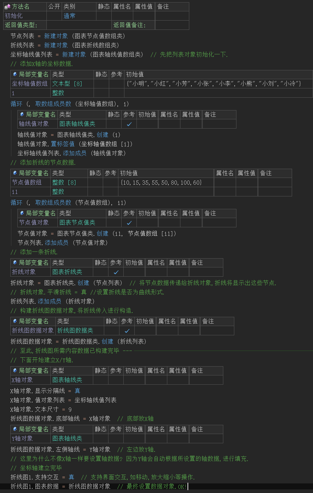
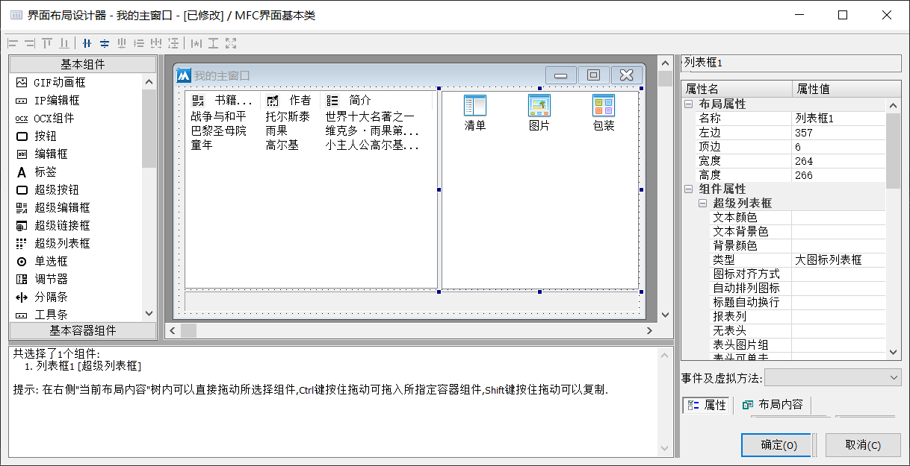
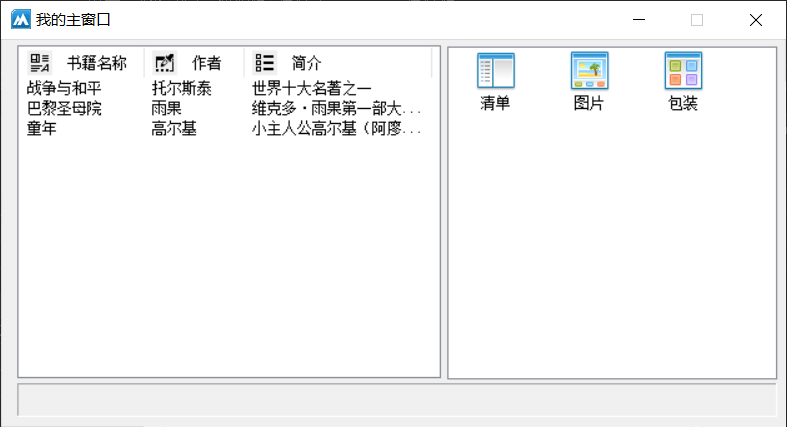
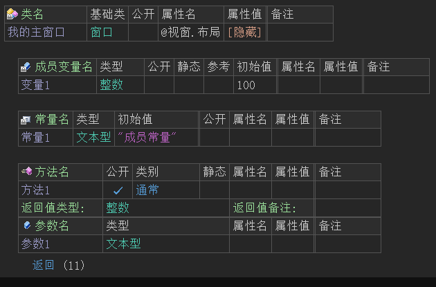
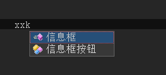
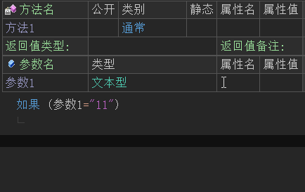
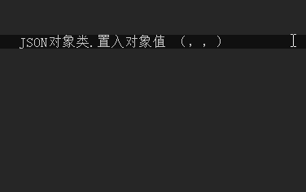
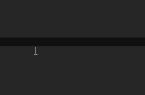
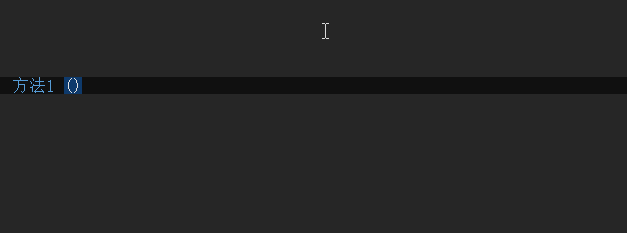

1、火山开发平台介绍
火山软件开发平台是完全拥有自主知识产权、一种目的硬件设备无关、目的软件环境无关、易学易用实用、完全本地化的中文软件快速开发平台。
火山平台采用独创的“语言之上的语言”（LOL）技术，成功屏蔽了火山程序对特定目标环境的依赖。用户只需要学习掌握火山程序语言，就可以针对各种目的环境进行软件开发。同时由于火山程序编译器所编译出来的是目标语言的源代码，因此能够最大限度地提升火山程序员与第三方的合作和资源共享效率， 以及所开发火山程序被社会的认可程度。
以下为火山软件开发平台的架构图：
火山平台用户源程序 支持对应目标环境的火山类库 支持对应目标环境的火山编译器 Assembly / C / C++ / C# ...... Java Objective C / Swift HTML5 + JavaScript + CSS PHP 其它 ..... 本地语言编译器 本地语言编译器 本地语言编译器 本地语言解释器 本地语言解释器 Windows桌面、Linux/Unix服务器端、嵌入式设备、单片机 ...... 安卓移动端、安卓嵌入式设备、服务器 ...... ios应用 网站前端展示、HTML5跨平台应用。 WEB服务器端
2、火山开发特点
2.1 全中文支持
对普通用户而言，火山软件开发平台实现了彻底的中文化开发，用户无需掌握太多的专业知识、无需学习英文，即可快速开发高效实用的各类应用软件。目前具有火山安卓软件开发平台和火山视窗软件开发平台两个子平台，用作分别支持用户开发基于安卓和Windows视窗操作系统的应用程序。
如下图为火山视窗程序部分演示代码：
如下图为火山安卓程序部分演示代码：

2.2 可视化编程
(1) 界面可视化
火山视窗平台支持界面可视化，设计的程序界面所见即所得，如下图所示：

最终运行后：

(2) 代码可视化
火山平台中类、变量、常量、方法均采用表格可视化设计，可节省关键词记忆、提高程序开发效率。

2.3 语句快速录入
火山平台内置了“首/全拼输入法”，可快速使用中文名称首拼或全拼进行程序代码输入。
譬如：信息框() 只需要输入“xxk”即可。

除了“首/全拼输入法”外，火山中对于很多符号的输入也都进行了智能处理。
譬如：进行条件比较时需要双等号，但在火山中仅需要输入一个等号即可，火山会自动补充。

又譬如：在调用某方法时，使用了中文状态下的括号和逗号，火山会自动转换成英文符号。

对于“&&”(且)和“||”(或)这两个关系运算符，可通过拼音快速输入。

2.4 代码即文档
在火山中只要不刻意使用奇奇怪怪的名称进行命名，基本可以实现代码即文档，即使是没有注释、或者说非常少量的注释也可以轻松的阅读源代码，非常便于代码传播与交流，这是其它编程语言所不具备的特性。
2.5 参数引导
通过参数引导，可减少用户记忆量，减少出错的可能性。
火山中每个方法都有各自的参数，想要记住所有方法有哪些参数以及使用方法显然是不太现实。在程序实际开发过程中，通常都需要利用火山即时帮助系统或官方图文教程来学习使用这个方法，而参数引导技术就即时帮助中的一种功能。
如下图所示：
当输入参数分隔符时，注意观察悬浮提示颜色变化，会智能提示当前正在输入哪个参数。

2.6 跨平台实现语法统一
如“2.1 全中文支持”中的例图可知，即使是开发平台不同，但程序语法几乎是一致的。
最终可以达到，学会其中任意一个开发平台后，都可以轻松实现火山软件开发一通百通，快速开发各类应用软件。

3、火山平台差异
3.1 关于火山安卓软件开发平台
火山安卓软件开发平台由“火山软件开发基础平台”+“支持安卓目标环境的火山类库”+“支持安卓目标环境的编译器/调试器插件及相关工具”三部分组成，能够将用户开发的火山源程序编译为可以在安卓系统下运行的Java源程序。
3.2 关于火山视窗软件开发平台
火山视窗软件开发平台由“火山软件开发基础平台”+“支持windows视窗系统目标环境的火山类库”+“支持windows视窗系统目标环境的编译器/调试器插件及相关工具”三部分组成，能够将用户开发的火山源程序编译为可以在windows视窗系统下运行的C++源程序。
火山视窗支持编译“32/64位”的exe可执行文件和dll动态链接库，并全面支持Unicode(统一码）字符集。
[下一章]